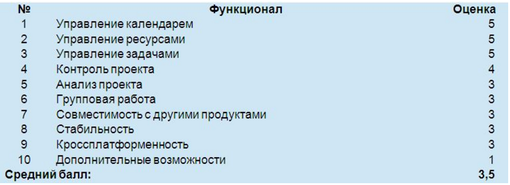

Считается, что «Управление проектами» - это молодая наука. Действительно, в современном виде она сформирована где-то за 20-30 последних лет (конец прошлого века). Однако историю ее возникновения можно проследить с конца 18 века
История развития понятия о проектах
Считается, что «Управление проектами» - это молодая наука. Действительно, в современном виде она сформирована где-то за 20-30 последних лет (конец прошлого века). Однако историю ее возникновения можно проследить с конца 18 века:
I ЭТАП (Предпосылки)
- Адам Смит (1776) – первым сформулировал идею экономических законов
- Давид Рикардо (1867) – идея экономических законов получила свое развитие
- Карл Маркс (1867) – издана книга «Капитал», где было показано влияние труда наформирование ценности продукта
II ЭТАП (Начало)
- Фредерик Уинслоу Тейлор (1895) – провел исследование научной организации труда
- Генри Лоуренс Гант (1910) – создание диаграммы календарного планирования – дошла до нашего времени практически без изменений, на данный момент современными идеологами систем управления проектами в нее добавлена только связь с задачами.
- ГаррингтонЭмерсон (1911) – было сформулировано 12 принципов производительности
- Анри Файоль (1916) – идея научной организации труда получила развитие, было сформулировано 5 функций менеджмента и 14 принципов управления.
III ЭТАП (Середина)
- Лютер Гулик (1939) – была разработана матричная структура управления проектами
- Л.Уокер и Дж. Келли (1957) – получила развитие методика сетевого планирования и управления (сначала был разработан CPM - метод критического пути, позднее PERT – метод оценки и пересмотра программ). В результате дальнейшего развития эти системы превратились в совокупную методику построения графиков.
IV ЭТАП (Современность)
- PMBOK (1987) – принятие свода знаний по управлению проектами
- ANSI/PMI99 (2004) – Американский институт национальных стандартов принял развитие этого стандарта
Всю концепцию управления проектами можно выразить через треугольник проектирования:
В основном, проектный менеджер занимается сохранением этого треугольника. Чтобы не расползался функционал (ведь расползание функционала влечет за собой увеличение затрат или времени на проект, а это все взаимосвязано), нельзя изменить одну из сторон треугольника (при сохранении округлой формы качества), не изменив другие стороны. То есть, если вы что-то расширили – у вас автоматически увеличились другие вещи.
Сейчас мы с вами рассмотрим четыре программных продукта, которые позволяют бороться с этим проектным треугольником.
- Planner
- GanttProject
- Trac
- Redmine
Начнем с самого простого инструмента из рассматриваемых – с инструмента Planner.
Planner
Planner – это инструмент календарного планирования, содержит в себе:
- Управление календарем:
- можно вести несколько календарей,
- можно задавать виды дней этих календарей
- можно указывать для каждого вида дня в календаре рабочее время.
- Управление ресурсами
- в Planner-е есть достаточно гибко настраиваемая система задания полей ресурсов,
- в том числе имеется встроенный параметр «цена ресурса за час». Это означает, что с помощью Planner-а вы можете приблизительно предположить стоимость вашего проекта (в условиях наличия плана этого проекта)
- Planner позволяет гибко редактировать план в Диаграмме Ганта.Это дает возможность на первоначальном этапе развития проекта показать, сколько проект займет времени и сколько он будет стоить.
- Конечно, у Planner-а есть свои недостатки:
- Это проект с открытыми исходниками (OpenSource), изначально предназначенный для Unix-систем. То есть, написан с использованием библиотеки GTK, которая в среде Windows работает нестабильно (горячие клавиши, которые прекрасно работают в Linux-системах, в среде Windows работать не будут, т.е. вам придется управлять этим программным продуктом с помощью мышки)
- Ограниченность экспорта – возможность выгрузить проект Planner-а в формат MicrosoftProject-а отсутствует (хотя есть возможность выгрузить проект в формат HTML, а также в самомMicrosoftProjectесть возможность импорта из формата проекта Planner-а).
- Распространяется по лицензии GPL. Эта лицензия позволяет запускать программы с любой целью, изучать, как программа работает, ее модифицировать, распространять исходный или исполняемый код. Создать или даже продать ее модификацию. Единственное ограничение, которое лицензия GPL на вас накладывает, это то, что если вы разрабатываете на базе программного продукта под этой лицензией свой программный продукт, то вы обязаны предоставить исходный код. Продукт без исходного кода распространять нельзя. Сделано это для того, чтобы программы можно было изучать, на них можно было бы учиться. Это очень удобно.
Подведем итог (приведены мои субъективные оценки):

GanttProject
Второй программный продукт – GanttProject. На самом деле, сначала я хотел рассказать про OpenProject, но, к сожалению, так как это OpenSourceпроект, он уже не развивается с 2008 года и, к сожалению, запустить на Linux-системе мне его не удалось. Поэтому в своем обзоре я заменил этот проект на GanttProject.
- Java. Отличие этого программного продукта, прежде всего, заключается в том, что разработан он не на Си, а наJava.Это обуславливает более гибкие возможности по доработке этого программного продукта под нужды конкретной группы разработчиков. Код, написанный на Java, более приспособлен к гибкому изменению.
- Интерфейс (ленточный, а у Planner-а интерфейс закладок, как в Web-браузере)
- Календари – уступают по настройкам продукту Planner (настройка ограничивается только выбором календаря праздничных дней и установкой признака работы/невыхода в праздничные дни – при этом календарь праздничных дней для России отсутствует – установить вручную такие дни невозможно)
- Ресурсы (для ресурсов есть очень удобная возможность указания отпускных дней – это несколько компенсирует отсутствие настроек для праздничных дней)
- Задачи (имеют гораздо больше настроек, чем в Planner-е – можно красиво раскрасить диаграмму Ганта – в Planner-е такой возможности нет, там диаграмма монотонного цвета) – однако это не расширение функционала, это расширение внешнего вида. В принципе, задачи в GanttProject во всем остальном абсолютно такие же, как и в Planner
- Аналитика (выгодное отличие GanttProject– аналитическое расширение для подсветки критического пути). Критический путь – это набор задач, который влияет на сроки проекта. Задач в проекте может быть очень много, но не все они влияют на срок проекта. Некоторые задачи можно безболезненно добавить или безболезненно убрать (при наличии свободных ресурсов). А изменение некоторых другие задач просто приведет к раздутию сроков проекта. А отслеживать эти критичные задачи очень удобно при помощи их подсветки. Также GanttProject позволяет отображать сетевую диаграмму.
- Экспорт и импорт. Больше всего в GanttProjectпоражает возможность экспорта. Созданный вами проект вы можете экспортировать практически в любой формат (HTML, png, jpg,MicrosoftProject, cvs, txt, pdf). Если у вас хорошо детализированный план проекта, созданный в GanttProjectпродукт можно использовать как некоторую документацию на проект.
- ЛицензияGPL (такая же, как и у Planner-а)
Если проанализировать его оценки и сравнить их с Planner-ом, то в принципе, оценка будет чуть-чуть повыше, потому что у GanttProject и стабильность выше, и кроссплатформенность повыше, и вообще этот проект получше, понадежнее. Но – опять же, этот проект вам не позволит так тривиально высчитать бюджет проекта, то есть вам все равно где-то нужно будет иметь сводную таблицу Excel, и уже в ней производить оценку использованных ресурсов. Кроме того, и GanttProjectи Planner – это однопользовательские продукты для проектного менеджера, конкретно для него. А хотелось бы больше поговорить о проектах, позволяющих осуществлять групповую работу, объединение, слияние, постановку задач. В постановке задач заключается очень важный момент: нет постановки задачи – соответственно, нет поля для тестирования.

Trac
Отличие системы Trac от предыдущих систем заключается в том, что для того, чтобы с ней работать, вам не нужно ничего устанавливать на свой компьютер. Все ставится на сервер в интернете. Однако, чтобы эта система заработала, на этот сервер надо поставить достаточно много.
- СУБД.Проектом поддерживается две СУБД:
- Встраиваемая(SQLlite)
- Многопользовательская (2 вида – PostgreSQLи MySQL)
Выбор СУБД, на котором будет работать Trac, будет зависеть от того, где вы собираетесь ее использовать. Если вы не собираетесь модифицировать систему, то SQLlite подойдет вполне. SQLlite позволяет архивировать базу данных с вашими задачами и планом работ в единый файл (в других СУБД так не выйдет). Если вам важна производительность любой ценой, то вам больше подойдет такая СУБД, как MySQL.PostgreSQL придерживается политики максимальной поддержки стандартов. Стандарт либо реализуется целиком и полностью, либо его там нет.
- Python. Платформа, на которой разработан проект Trac.Phyton позволяет проекту быть кроссплатформенным, потому что в этой платформе есть интерпретаторы для всех операционных систем. Tracтак же имеет собственный Web-сервер. Но я не рекомендую им пользоваться. Лучше ставить Web-серверApache и с помощью него работать.
- Функционал изначально достаточно минималистичный:
- Wiki (поддерживает базу знаний)
- План работ
- Список задач
- Обзор исходного кода
Для многих задач этого вполне достаточно. Однако, если вам нужно что-то еще для управления проектом, вы можете это установить, потому что система Trac основана на системе плагинов. Стоит отметить, что существует очень много плагинов к этому продукту (есть диаграмма Ганта, есть управление календарями, есть выгрузка и синхронизация с Outlook-ом, есть даже аналог Visio – проект PlantUML – преобразование текста UML в графический вид, что позволяет нескольким людям одновременно работать над одним и тем же бизнес-процессом, над одной и той же документацией).
- Недостатки
- Лицензия, под которой поставляется Trac – лицензия BSD (все остальные рассматриваемые системы управления проектами имеют другие виды лицензирования). Эта лицензия включает три пункта: 1. Нельзя скрывать, что продукт основан на данном продукте. 2. Нельзя модифицировать продукт и говорить, что это тот же самый продукт. 3. Отказ от гарантий – отказ от того, что любые ущербы, причиненные этой программой или ее модификацией, вы не сможете предъявить разработчику. Эта лицензия позволяет внедрять то, что кто-то пишет на промышленном уровне.
Redmine
Redmine – это замечательный продукт. Именно на нем я сейчас и работаю.
- Ruby. Redmineнаписан на языке Ruby. На этом языке легко начать программировать – Rubyочень приближен к человеческому языку, однако на полное освоение функционала Rubyможет уйти очень много времени – слишком много там всяких нюансов.
- Redmine работает на каркасеRubyonRails. На этом же каркасе работают такие известные проекты, как:
- Twitter
- Basecamp
- GitHub
Это всем известные проекты. Итак, что же характеризует этот каркас, как вполне стабильный продукт.
Функционал
- Ведение нескольких проектов. В отличие от Trac, где можно вести только один проект. Если вам нужно на Trac создать еще один проект, вам придется инициализировать еще раз среду для Trac. В Redmine вы заводите новый проект буквально двумя кликами мыши
- Ведение подпроектов. У одного проекта может быть несколько подпроектов
- Гибкая система доступа, основанная на ролях. Позволяет выдавать права на проекты. То есть, для каждого пользователя назначается список действий, которые он может совершать
- Система отслеживания ошибок. Очень полезный инструмент. Когда вы сообщаете об ошибке, чтобы кто-то на нее прореагировал, можно гибко задавать бизнес-процессы для этих ошибок
- Диаграммы Ганта и календарь. Очень хорошо реализованы даже в базовом функционале. Напомню, что система Redmine – это расширяемая система. Есть возможность добавлять плагины,расширяя базовый функционал того же календаря и диаграммы Ганта
- Ведение новостей проекта, документов и управление файлами
- Оповещение об изменениях с помощью RSS-потоков и электронной почты
- Вики для каждого проекта
- Форумы для каждого проекта
- Учет временных затрат.Удобное ведение учета времени: можно задавать, сколько вы потратили на разработку, на проектирование и т.д. – и в дальнейшем строить по этим данным отчеты. Причем, есть Plugin-ы, которые строят достаточно красивые интерактивные диаграммы
- Настраиваемые произвольные поля для инцидентов, временных затрат, проектов и пользователей
- Легкая интеграция с системами управления версиями (SVN, CVS, Git, Mercurial, Bazaar и Darcs)
- Создание записей об ошибках на основе полученных писем. Клиент даже не знает, что у нас стоит Redmine. Он просто присылает вам письмо на почтовый ящик и это преобразуется в задачу.
- Поддержка множественной аутентификации LDAP. Если у вас стоит Windows-домен, интеграция с Redmin-ом будет практически прозрачной
- Возможность самостоятельной регистрации новых пользователей. Одно из преимуществ этого проекта. Все остальные рассматриваемые системы администрируются централизованно, т.е. пользователя завести может только администратор. Здесь от администратора требуется только подтверждение регистрации нового пользователя
- Многоязыковой интерфейс (в том числе русский)
- Расширяемость за счет системы плагинов
- Поддержка СУБД MySQL, PostgreSQL, SQLite, Oracle.
В заключение хочется сказать, что ни один программный продукт не будет работать за вас. Вам все равно придется работать, и проектный треугольник, который мы рассматривали, все равно придется сдерживать вам. Поэтому, когда вы делаете проекты – вы можете выбирать любые инструменты, но никто кроме вас не сделает проект красивым, надежным и доходным.